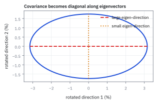
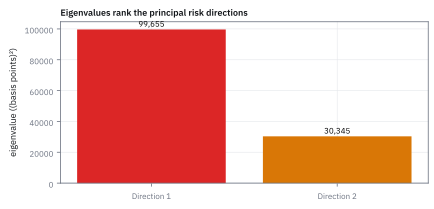

7.6 Simulating the MVN with the Cholesky Decomposition
สร้าง correlated scenarios จาก independent shocks ด้วย factorization ที่ตรวจได้
Monte Carlo ของสองสินทรัพย์ต้องผันผวนปีละ 20% กับ 30% และขยับด้วยกันที่ correlation 0.6 แต่เครื่องสุ่มให้ได้แค่ตัวเลขระฆังมาตรฐานที่อิสระต่อกัน จะผสมมันอย่างไรให้ได้ 0.6 พอดี?
เฉลย: ให้ตัวแรกใช้ 0.20 z₁ และตัวที่สองใช้ 0.18 z₁ + 0.24 z₂ ตัวที่สองยืมเลขสุ่มของตัวแรกมา 0.18 ส่วน และส่วนที่ยืมนั้นเองคือ correlation 0.6 ถ้าเครื่องสุ่มได้ 1.4 กับ −0.7 สองสินทรัพย์ได้ +28.0% กับ +8.4%
Cholesky Decomposition คือการแยก covariance matrix เป็นตัวประกอบสามเหลี่ยม ใช้แปลง shocks อิสระให้เป็นตัวอย่าง Multivariate Normal (MVN) ที่มีการขยับร่วมตามต้องการ
ศัพท์ที่ใช้ในหัวข้อนี้
- Cholesky decomposition
- การ factorize positive-definite covariance matrix เป็น lower-triangular matrix คูณ transpose ใช้สร้าง correlated Normal samples จาก independent samples
- Multivariate Normal (MVN) distribution
- joint distribution ของ return vector ที่ใช้ Cholesky factor สร้าง scenarios ได้ตาม covariance target
- Monte Carlo
- การสุ่ม scenarios จำนวนมากเพื่อประมาณโอกาสหรือความเสี่ยงใช้ทดสอบ portfolio ภายใต้ joint return model
- standard Normal
- Normal distribution ที่มี mean 0 และ variance 1 ใช้เป็น independent base shocks ก่อน transformation
- correlated sample
- sample vector ที่มี covariance ตาม target matrix ใช้เป็น scenario ของสินทรัพย์หลายตัว
- normal distribution
- distribution รูประฆังที่ใช้เป็น base law ของแต่ละ shock และของ MVN scenario
- variance
- ค่ากระจายรอบค่าเฉลี่ยใช้ตรวจ spread ของ transformed sample
- covariance
- ค่า co-movement ระหว่างผลตอบแทนใช้เป็น target ที่ Cholesky ต้อง reproduce
- factor
- ตัวคูณใน transformation ที่ผสม shocks ใช้สร้าง shared covariance component
- spread
- ความกว้างของ transformed return distribution ใช้ตรวจว่า simulator สร้างความผันผวนตาม target หรือไม่
- volatility
- ขนาดของ return fluctuation ที่อ่านจาก standard deviation ใช้เป็น target spread ของ simulator
- SPX
- ดัชนี S&P 500 ของตลาดสหรัฐฯ ใช้เป็น return component แรก
- QQQ
- กองทุน Nasdaq-100 ของตลาดสหรัฐฯ ใช้เป็น return component ที่สอง
- copula
- วิธีผูกหลาย random variable เข้าด้วยกันแยกจากรูปของแต่ละตัว Gaussian copula ผูกด้วย correlation แบบระฆัง ส่วน t-copula ทำให้หางพังพร้อมกันบ่อยกว่า ใช้เลือกว่าวิกฤตในการจำลองจะรุนแรงแค่ไหน
- lower-triangular matrix
- matrix ที่มีค่าเหนือแนวทแยงหลักเป็นศูนย์ทั้งหมด ทำให้แก้สมการไล่ตามลำดับจากบนลงล่างได้ทีละตัวแปร
- positive-definite matrix
- matrix สมมาตรที่มีค่า $v^{\mathsf{T}}\Sigma v > 0$ สำหรับทุก vector $v \neq 0$ รับประกันว่า Cholesky factor จะถอดรากที่สองได้เสมอโดยไม่ติดลบ
สัญลักษณ์ที่ใช้ในหัวข้อนี้
| สัญลักษณ์ | ความหมาย | หน่วย |
|---|---|---|
| $z$ | independent standard Normal shock vector | unitless |
| $L$ | lower-triangular Cholesky factor | return/day per shock |
| $\Sigma$ | target covariance matrix | return²/day² |
| $r$ | simulated return vector | decimal return/day |
| $\mu$ | target mean vector | decimal return/day |
| $n$ | number of simulated scenarios | นับ scenarios |
| $\ell_{ij}$ | สมาชิกในแถวที่ $i$ หลักที่ $j$ ของ Cholesky factor $L$ | return/day per shock |
| $M_r(s)$ | ตัวช่วยที่ยุบทุก moment ของผลตอบแทนจำลองไว้ในสมการเดียว ใช้ตรวจว่าตัวเลขที่สุ่มออกมามีค่าเฉลี่ยและความผันผวนตรงกับที่สั่งไว้จริง | unitless |
| $I$ | identity matrix ขนาด $d \times d$ | unitless |
| $d$ | จำนวนสินทรัพย์ คือจำนวนช่องของ $r$ และ $z$ | นับสินทรัพย์ |
| $\sigma_1,\ \sigma_2,\ \rho$ | ความผันผวนและ correlation เป้าหมายในโจทย์เปิดเรื่อง | decimal return/year, unitless |
| $C,\ v$ | correlation matrix ที่ขัดกันเองในขั้นที่ 13 และพอร์ตที่ใช้ทดสอบมัน | unitless |
ที่มาและแรงผลักดัน: จากปัญหาการรังวัดแผนที่สู่การจำลองความเสี่ยงพอร์ต
André-Louis Cholesky (อ็องเดร-หลุยส์ โชเลสกี) เป็นนายทหารปืนใหญ่และนักสำรวจทำแผนที่ชาวฝรั่งเศส ในช่วงทศวรรษ 1910 ก่อนสงครามโลกครั้งที่หนึ่ง เขาได้รับมอบหมายให้ทำแผนที่ภูมิประเทศด้วยการรังวัดโครงข่ายสามเหลี่ยม (triangulation) ในเกาะครีตและแอฟริกาเหนือ การวัดมุมและระยะทางจากยอดเขาสู่ยอดเขาทำให้เกิดระบบสมการเชิงเส้นที่ตัวแปรล้น (overdetermined system) จำนวนมาก ซึ่งต้องแก้ด้วยวิธีกำลังสองน้อยที่สุด (method of least squares)
สมการปรกติ (normal equations) จากวิธีกำลังสองน้อยที่สุดมีรูป $A^{\mathsf T} A x = A^{\mathsf T} b$ ซึ่ง coefficient matrix ด้านซ้ายมีสมมาตรและบวกแน่นอน แต่นักคำนวณยุคนั้นต้องพึ่ง Gaussian elimination ทั่วไป ซึ่งต้องคิดเลขด้วยมือเป็นสัดส่วนตามกำลังสามของขนาดมิติ ทั้งยังต้องจดบันทึกตัวเลขลงกระดาษเต็มตารางทั้งสองฟาก และเสี่ยงต่อความผิดพลาดของทศนิยมสะสม
โชเลสกีสังเกตว่าความสมมาตรและบวกแน่นอนทำให้ไม่จำเป็นต้องแปลงทั้ง matrix แต่สามารถแยกตัวประกอบออกมาเป็นผลคูณของ matrix สามเหลี่ยมล่างกับ transpose ของตัวเองในรูป $L L^{\mathsf T}$ ได้โดยตรง การค้นพบนี้ช่วยตัดจำนวนขั้นตอนการคำนวณลงครึ่งหนึ่ง ประหยัดเนื้อที่กระดาษจดบันทึกครึ่งหนึ่ง และมีเสถียรภาพเชิงตัวเลขสูงมากโดยไม่ต้องสลับแถว (no pivoting)
น่าเสียดายที่โชเลสกีเสียชีวิตในสนามรบเมื่อเดือนสิงหาคมปี 1918 ในช่วงท้ายของสงครามโลกครั้งที่หนึ่ง พันโทเบอนัวต์ (Commandant Benoît) เพื่อนร่วมหน่วย จึงนำบันทึกของเขามาเรียบเรียงและตีพิมพ์ในปี 1924 ในวารสาร Bulletin Géodésique เพื่อเป็นเกียรติแก่เขา
หลายทศวรรษต่อมา ในโลกการเงินเชิงปริมาณ เมื่อต้องการจำลองวิกฤตและความเสี่ยงของพอร์ตที่มีสินทรัพย์นับสิบตัวด้วยวิธี Monte Carlo นักคำนวณพบปัญหาว่าการสุ่มตัวเลขที่มี correlation จาก Multivariate Normal distribution โดยตรงนั้นทำได้ยากและช้ามาก แต่งานของโชเลสกีกลับมอบทางออกที่สมบูรณ์แบบ: สุ่ม shock อิสระด้วยวิธีมาตรฐานที่เร็วที่สุด แล้วคูณด้วย matrix $L$ เพียงครั้งเดียว ตัวแปรทั้งหมดจะถูกเหนี่ยวนำให้มี covariance ตามเป้าหมายทันที
โจทย์ simulator
ให้ $z$ เป็น vector ของ independent standard Normal shocks และต้องสร้าง scenarios ของ SPX กับ QQQ ให้มี target mean กับ covariance ตาม risk model Monte Carlo engine ต้องทำซ้ำได้และตรวจ covariance ของ sample ได้
ขั้นที่ 1 — นิยามของ Cholesky factor: ชิ้นส่วนที่คูณกับตัวเองแล้วคืน covariance
บรรทัดนี้เป็น นิยาม ของสิ่งที่เรากำลังตามหา ไม่ใช่ผลที่พิสูจน์มา เราอยากได้ชิ้นส่วนที่ทำหน้าที่เหมือนรากที่สองของตาราง คือคูณกับทรานสโพสของตัวเองแล้วคืนของเดิม เงื่อนไขที่ทำให้หาได้จริงคือตารางต้อง positive definite ซึ่งเป็นสมบัติจากหัวข้อ 4.6
Cholesky factor $L$ เป็น lower-triangular matrix ที่เมื่อคูณกับ transpose แล้วคืน target covariance $\Sigma$; factorization ต้องการ positive-definite matrix
ขั้นที่ 2 — ที่มาของสูตร Cholesky ทั่วไป: ถอดสมการทีละช่องจากผลคูณ matrix สามเหลี่ยมล่าง
สูตรนี้สร้างขึ้นจากนิยามการคูณ matrix ธรรมดา ไม่ได้เสกขึ้นมา ขั้นแรกแก้ช่อง $\ell_{11} = \sqrt{\Sigma_{11}}$ จากนั้นนำไปหารหาช่องใต้แนวทแยงในหลักแรกทั้งหมด เมื่อเสร็จหลักที่หนึ่งก็ขยับไปหลักที่สอง ทำซ้ำเช่นนี้ไปเรื่อย ๆ
สังเกตว่าเทอมในรากที่สอง $\Sigma_{jj} - \sum_{k=1}^{j-1} \ell_{jk}^2$ ต้องเป็นบวกเสมอ ซึ่งเงื่อนไข positive definite ของ $\Sigma$ เป็นตัวรับประกัน หาก matrix มีความเสี่ยงซ้ำซ้อนหรือมี correlation ที่ขัดแย้งกัน ค่านี้จะติดลบและ algorithm จะหยุดทำงานทันที
สมการ $L L^{\mathsf T} = \Sigma$ เกิดจากการจับคู่แถวของ $L$ กับหลักของ $L^{\mathsf T}$ ซึ่งก็คือแถวของ $L$ เอง เนื่องจาก $L$ เป็น lower triangular สมาชิกเหนือแนวทแยงจึงเป็นศูนย์ทั้งหมด ผลรวมจึงหยุดที่ตำแหน่ง $\min(i, j)$ เท่านั้น
สำหรับช่องแนวทแยง ผลคูณคือผลบวกกำลังสองของสมาชิกในแถวเดียวกัน เราจึงย้ายพจน์ที่คำนวณไว้ก่อนหน้าไปลบ แล้วถอดรากที่สองเพื่อปลดล็อก $\ell_{jj}$ ค่าบวกเสมอ
สำหรับช่องใต้แนวทแยง เราแยกพจน์สุดท้ายที่มี $\ell_{ij} \ell_{jj}$ ออกมา ย้ายผลคูณสะสมจาก shock ก่อนหน้าไปลบออกจาก covariance เป้าหมาย แล้วเอา $\ell_{jj}$ ที่เพิ่งหาได้ไปหาร กลไกนี้ไล่แก้ทีละหลักจากซ้ายไปขวาจนเต็มตาราง
ขั้นที่ 3 — นิยามของวิธีสร้าง: เอาก้อนสุ่มอิสระมาคูณกับชิ้นส่วนนั้น
บรรทัดนี้เป็น นิยาม ของขั้นตอนที่เราเลือกทำ ไม่ใช่ข้อสรุป เริ่มจากก้อนสุ่มที่เป็นอิสระต่อกันซึ่งสร้างง่าย แล้วคูณด้วยชิ้นส่วนจากขั้นที่ 1 ส่วนคำถามว่ามันให้ความเกี่ยวพันตรงตามที่สั่งจริงหรือไม่ เป็นหน้าที่ของขั้นที่ 6 ที่จะตรวจ
เริ่มจาก independent standard Normal vector $z$ แล้ว map ด้วย $L$ และ shift ด้วย $\mu$ เพื่อได้ correlated return vector $r$
ขั้นที่ 4 — แตก matrix 2×2 ด้วยมือ แล้วดูว่าทำไม shock ที่แชร์กันสร้าง correlation
สูตร $\Sigma=L\,L^{\mathsf{T}}$ ดูเหมือนต้องใช้ library แต่สำหรับสองสินทรัพย์มันคือสามสมการที่แก้ด้วยมือ และผลลัพธ์บอกกลไกทั้งหมด
แถวแรกของ $L$ มีช่องเดียว: $\ell_{11}^2$ ต้องเท่ากับ $\Sigma_{11}$ จึงถอดราก แถวสอง: $\ell_{21}\ell_{11}=\Sigma_{21}$ ให้ $\ell_{21}$ แล้ว $\ell_{21}^2+\ell_{22}^2=\Sigma_{22}$ ให้ $\ell_{22}$ สามช่อง สามสมการ แก้ทีละบรรทัด
สูตรของ $r_1, r_2$ คือความหมาย: $r_2$ ยืม shock ตัวแรก $z_1$ มา 0.012 ส่วน แล้วเติม shock ของตัวเอง $z_2$ อีก 0.0275 ส่วน การแชร์ $z_1$ นั่นเองที่สร้าง covariance และตัวเลข 0.0275 คือ conditional standard deviation จากหัวข้อ 7.4 (2.75%) ไม่ใช่เรื่องบังเอิญ
ก้อนท้ายที่ z = (1, −0.5) คือหนึ่ง scenario: shock ตลาดบวก QQQ ได้ส่วนแบ่งบวก 0.012 แต่ shock ของตัวเองลบ 0.01375 สุทธิ QQQ ติดลบเล็กน้อยทั้งที่ SPX ขึ้น ซึ่งเกิดได้จริงเพราะ correlation แค่ 0.4
ขั้นที่ 5 — คำนวณสามสินทรัพย์ด้วยมือ: ดูการหักลบ shock ร่วมเมื่อขยายสู่มิติที่สูงขึ้น
กรณีสองมิติไม่เคยแสดงการลบพจน์ร่วมให้เห็น เพราะหลักแรกไม่มีอดีตให้หักออก ตัวอย่างสามสินทรัพย์นี้จึงเผยให้เห็นโครงสร้างแบบลูกโซ่: แต่ละสินทรัพย์จะดึง shock ร่วมที่มีอยู่แล้วมาผสม แล้วจึงเติม shock เฉพาะตัวของตัวเองลงไปในช่องแนวทแยง
สินทรัพย์ที่สามคือกองทุนพันธบัตรระยะยาว ผันผวนวันละ 1% และสวนทางกับหุ้นเล็กน้อย ในรากของ ℓ₃₃ คิดในหน่วย 10⁻⁶ ให้ตัวเลขสั้น นี่คือภาพเดียวกับ factor model: shock แรกทำหน้าที่เหมือนภาพรวมตลาด shock ที่สองคือปัจจัยกลุ่มอุตสาหกรรม และ shock ที่สามคือความผันผวนเฉพาะของพันธบัตร
เมื่อขยายเป็นสามสินทรัพย์ เราเห็นหัวใจของ Cholesky ชัดเจนขึ้น: $\ell_{31}$ คำนวณตรงไปตรงมาเพราะ shock แรก $z_1$ ยังไม่มีใครแย่ง แต่พอถึง $\ell_{32}$ เราต้องหัก $\ell_{31}\ell_{21}$ ออกจาก covariance เป้าหมายเสียก่อน
เหตุผลเพราะสินทรัพย์ 3 และสินทรัพย์ 2 ต่างก็รับ shock ตัวแรก $z_1$ มาทั้งคู่ จึงมี covariance ส่วนหนึ่งเกิดขึ้นแล้วตั้งแต่ก้าวแรก $(-0.000036)$ หากไม่หักออกแล้วไปใส่ใน $z_2$ ซ้ำอีก covariance รวมจะล้นเป้าหมายทันที
ส่วน $\ell_{33}$ คือความผันผวนเฉพาะตัวที่ไม่เกี่ยวข้องกับใคร (idiosyncratic risk) คำนวณจาก variance รวมที่เหลือหลังจากหักส่วนที่ถูกอธิบายด้วย shock สองตัวแรกออกไปแล้ว จึงเหลือ $0.95\%$ ต่อวัน
ขั้นที่ 6 — verify covariance
ขั้นที่ 3 บอกว่าจะทำอะไร แต่ยังไม่ได้พิสูจน์ว่าได้ผลตามต้องการ หกบรรทัดนี้คำนวณย้อนกลับไปหา covariance ของสิ่งที่สร้างขึ้น แล้วพบว่าตรงกับเป้าหมาย นี่คือเหตุผลเดียวที่วิธีนี้ใช้ได้ ไม่ใช่เพราะ library มีคำสั่งนี้ให้เรียก
ขั้นที่ 3 บอกว่าจะทำอะไร แต่ยังไม่ได้พิสูจน์ว่าได้ผลตามต้องการ ขั้นนี้จึงคำนวณย้อนกลับไปหา covariance ของสิ่งที่เพิ่งสร้างขึ้น เริ่มจากย้ายข้าง แล้วคูณด้วย transpose ของตัวเอง ใช้กฎ transpose ของผลคูณคือสลับลำดับ
จากนั้นดึง $L$ ทั้งสองข้างออกนอกค่าเฉลี่ยได้ เพราะมันไม่ได้สุ่ม มันคำนวณมาแล้วในขั้นที่ 1 ส่วนก้อนตรงกลางคือ covariance ของก้อนสุ่มตั้งต้น ซึ่งช่องแนวทแยงเป็น 1 และช่องนอกแนวทแยงเป็นศูนย์เพราะอิสระต่อกัน ตามหัวข้อ 6.5 แทนกลับแล้วใช้นิยามของขั้นที่ 1 ก็ได้ $\Sigma$ ที่สั่งไว้ตั้งแต่แรกพอดี
ขั้นที่ 7 — พิสูจน์ Multivariate Normal distribution ด้วย Moment Generating Function (MGF)
บรรทัดเหล่านี้ตอบคำถามที่นักคำนวณมักมองข้าม: ทำไมการคูณ matrix $L$ กับ vector อิสระ $z$ จึงไม่ทำให้รูปทรงของความสุ่มบิดเบี้ยวจนหลุดจากความเป็น Normal?
คำตอบคือ linear combination ของ Normal อิสระยังคงเป็น Normal เสมอ และ MGF แสดงให้เห็นว่าโครงสร้าง correlation ทั้งหมดถูกบรรจุลงในพจน์ $s^{\mathsf T}\Sigma s$ อย่างแม่นยำ ไม่เหลือเศษส่วนเกินแม้แต่พจน์เดียว
การตรวจค่าเฉลี่ยและ covariance ในขั้นที่ 6 ยังไม่พอที่จะยืนยันว่า $r$ มี distribution เป็นระฆังคว่ำหลายมิติจริง เพราะ random variable ชนิดอื่นก็มีสองค่านั้นได้ เราจึงตรวจสอบรูปทรงทั้งหมดผ่าน Moment Generating Function (MGF)
เราเริ่มต้นจากนิยามของ MGF แล้วแทน $r = \mu + Lz$ ดึงพจน์ค่าคงที่ $\exp(s^{\mathsf T}\mu)$ ออกมา ด้านในเหลือ expected value ของผลคูณ shock ซึ่งแยกเป็นผลคูณเดี่ยวได้ทันทีเพราะ $z_k$ แต่ละตัวมี independence ต่อกัน
เนื่องจาก $z_k \sim \mathcal{N}(0, 1)$ สูตร MGF ของ standard Normal คือ $\exp(t^2/2)$ เมื่อแทน $t = (L^{\mathsf T}s)_k$ แล้วรวมผลคูณกลับเป็นผลบวกกำลังสองในเลขชี้กำลัง จะได้ dot product ของ vector $(L^{\mathsf T}s)$ กับตัวเอง
การกระจาย transpose เปลี่ยน $(L^{\mathsf T}s)^{\mathsf T}(L^{\mathsf T}s)$ เป็น $s^{\mathsf T}L\,L^{\mathsf T}s$ แล้วแทน $L\,L^{\mathsf T} = \Sigma$ ผลลัพธ์สุดท้ายคือฟอร์ม MGF ของ Multivariate Normal พอดี โดยทฤษฎีบทความมีหนึ่งเดียว $r$ จึงเป็น Multivariate Normal อย่างสมบูรณ์
ขั้นที่ 8 — นิยามของการรันจริง: ทำซ้ำหลายรอบด้วยการแปลงเดิม
บรรทัดนี้เป็น นิยาม ของขั้นตอนที่จะรันจริง ไม่ใช่ผลที่พิสูจน์ สร้างก้อนสุ่มอิสระหลายชุด แล้วใช้การแปลงเดิมกับทุกชุด ความถูกต้องมาจากขั้นที่ 6 และขั้นที่ 7 แล้ว งานจริงต้องทำซ้ำได้ จึงต้องตรึงตัวสุ่มไว้ ไม่งั้นตรวจงานกันไม่ได้เลย
สร้าง $n$ independent shock vectors แล้วใช้ transformation เดิมกับทุก scenario; iid หมายถึง independent และ identically distributed
ขั้นที่ 9 — โจทย์เปิดเรื่อง: สร้าง Σ แล้วคูณ LLᵀ ออกมาเป็นสามสมการ
ของที่โจทย์ให้: σ₁ = 0.20 และ σ₂ = 0.30 ต่อปี correlation เป้าหมาย 0.6 ค่าเฉลี่ยตั้งเป็นศูนย์เพื่อดูโครงสร้างความเสี่ยงล้วน ๆ เครื่องสุ่มให้ z ที่อิสระกัน covariance ของมันจึงเป็น I ตามขั้นที่ 6 งานทั้งหมดคือหา L ที่ LLᵀ = Σ
คูณแถวของ L กับหลักของ Lᵀ ทีละช่อง ช่องขวาบนกับซ้ายล่างให้สมการเดียวกัน เพราะ LLᵀ สมมาตรเองเสมอ จึงเหลือสามสมการพอดีกับสามช่องที่ไม่รู้ค่า ในมิติ d ทั่วไป Σ มีเลขอิสระ d(d + 1)/2 ตัว และ L สามเหลี่ยมล่างก็มี d(d + 1)/2 ช่องพอดี
ทำไมต้องบังคับสามเหลี่ยมล่าง: รากที่สองของ matrix มีได้หลายตัว เอา L ไปคูณ matrix หมุนใด ๆ ก็ยังใช้ได้ การบังคับสามเหลี่ยมล่างและทแยงเป็นบวกทำให้คำตอบมีตัวเดียว และแก้ไล่จากบนลงล่างได้ทีละตัว ไม่ต้องแก้ระบบสมการพร้อมกัน
ขั้นที่ 10 — แก้จากบนลงล่าง: 0.20, 0.18, 0.24
สมการแรกมีตัวไม่รู้ค่าตัวเดียว เริ่มตรงนั้น แล้วเอาค่าที่ได้ไปแทนในสมการถัดไป แต่ละสมการจึงมีตัวใหม่เพิ่มแค่ตัวเดียวเสมอ นี่คือ algorithm ของขั้นที่ 2 ทั้งหมด ครึ่งหลังทำซ้ำด้วยตัวอักษรแทนตัวเลข เพื่อให้ได้สูตรปิดของทุกช่อง
ตรวจกลับทุกช่อง 0.20² = 0.0400, 0.20 × 0.18 = 0.0360 และ 0.0324 + 0.0576 = 0.0900 ตรงกับ Σ ครบ สูตรปิดบอกความหมายของแต่ละช่อง ℓ₁₁ คือ σ₁ ℓ₂₁ คือ ρσ₂ และ ℓ₂₂ คือ σ₂√(1 − ρ²)
0.24 คือความผันผวนของสินทรัพย์ที่สองส่วนที่ตัวแรกอธิบายไม่ได้ ตัวเดียวกับความเสี่ยงที่เหลือหลัง hedge ในหัวข้อ 7.4 Cholesky กับ conditional distribution จึงเป็นสมการเดียวกันมองคนละมุม ตัวหนึ่งถามว่าเหลือความไม่แน่นอนเท่าไร อีกตัวถามว่าจะประกอบมันกลับอย่างไร
จุดเปราะคือขั้นถอดราก ถ้าสิ่งที่อยู่ในรากติดลบ algorithm หยุดทันที ขั้นที่ 13 จะลองทำให้มันพัง
ขั้นที่ 11 — สองบรรทัดที่เอาไปเขียนโค้ด และเส้นทางแรก
กาง r = Lz ออกเป็นสองบรรทัด แล้วดึง σ₂ ออกมาให้เห็นรูปมาตรฐาน จากนั้นแทนเลขสุ่มคู่แรก z₁ = 1.4 กับ z₂ = −0.7 ซึ่งมาจากเลขสุ่มระหว่าง 0 ถึง 1 คือ 0.9192 กับ 0.2420 ผ่าน Φ⁻¹
สินทรัพย์แรกขับด้วยเลขสุ่มตัวแรกล้วน ๆ ตัวที่สองมีสองก้อน ก้อนที่แชร์กับตัวแรก ρz₁ และก้อนของตัวเอง √(1 − ρ²)z₂ น้ำหนักสองก้อนต้องรวมกำลังสองได้ 1 variance จึงเท่าเดิม 0.6² + 0.8² = 0.36 + 0.64 = 1 คู่นี้คือสามเหลี่ยม 3-4-5
เส้นทางนี้ z₂ ติดลบ แต่ r₂ ยังบวก เพราะแรงดึงจากก้อนที่แชร์ 0.252 ชนะแรงของตัวเอง 0.168 นี่คือ correlation 0.6 ทำงานให้เห็นในเส้นทางเดียว แต่เส้นเดียวพิสูจน์อะไรไม่ได้ ต้องรันหลายหมื่นเส้นแล้ววัดกลับ
รูปนี้คือหัวใจของ Gaussian copula ที่ใช้ตั้งราคาหนี้ที่รวมเงินกู้หลายก้อนก่อนปี 2008 ข้อบกพร่องไม่ได้อยู่ที่พีชคณิต แต่อยู่ที่การสมมติว่า ρ เป็นค่าคงที่ตัวเดียวที่ใช้ได้ทุกสภาวะตลาด
ขั้นที่ 12 — รัน 200,000 เส้นทางแล้ววัดกลับ และทำไมต้องตรง
ตั้งเป้า σ₁ = 0.2000, σ₂ = 0.3000, ρ = 0.6000 รันหนึ่งครั้งด้วย seed 0 ได้ 0.2003, 0.2999, 0.5984 คลาดราว 0.002 ตามขนาด 1/√200,000 ส่วนเหตุผลที่ต้องตรงคิดด้วยมือได้ดังนี้
พจน์ Cov(z₁, z₂) หายทุกครั้งเพราะ z₁ กับ z₂ อิสระกัน นี่คือจุดเดียวในการพิสูจน์ที่ใช้สมบัติว่าเครื่องสุ่มให้ตัวอิสระ ถ้าเลขสุ่มที่ออกติดกันมี correlation แฝง ρ ที่วัดได้จะไม่ใช่ 0.6 ทั้งที่พีชคณิตถูกหมด
ต้นทุนคือแตก Σ ครั้งเดียวราว d³/3 แล้วใช้ L ซ้ำทุกเส้นทาง เหลือราว d² ต่อเส้น พอร์ต 500 สินทรัพย์แตกครั้งเดียว 41.7 ล้านครั้ง แล้วเส้นละ 250,000 ครั้ง Value at Risk แบบจำลองและราคา derivative หลายสินทรัพย์ทุกตัวมีบรรทัด L = chol(Σ) อยู่ข้างใน
ข้อจำกัด: L สร้างได้แค่ความเกี่ยวพันเชิงเส้นกับหางแบบระฆัง เส้นทางจำลองจึงไม่มีวันที่ทุกอย่างพังพร้อมกันแบบตลาดจริง ถ้าต้องการต้องเปลี่ยนเป็น t-copula หรือ model ที่สลับสภาวะตลาด
ขั้นที่ 13 — ทำให้มันพัง: ρ = 1.1 และสามคู่ที่ขัดกันเอง
ขั้นที่ 10 ถอดรากสองครั้ง ลองใส่ข้อมูลผิดดูว่าพังตรงไหน ครั้งแรกมีคนกรอก ρ = 1.1 ครั้งที่สองทุก correlation อยู่ระหว่าง −1 ถึง 1 แต่สามคู่คือ 0.9, 0.9 และ −0.9 เรียก correlation matrix นี้ว่า C ซึ่งทแยงเป็น 1
ρ = 1.1 ทำให้สิ่งที่อยู่ในรากติดลบ algorithm หยุดทันที กรณีที่สองร้ายกว่าเพราะทุกตัวเลขดูปกติ แต่สามคู่ขัดกันเอง ถ้าตัวที่ 1 ไปทางเดียวกับตัวที่ 2 และ 3 เกือบเต็มที่ ตัวที่ 2 กับ 3 ก็ต้องไปทางเดียวกัน จะสวนกันที่ −0.9 ไม่ได้
พอร์ต v ที่ short ตัวแรก long ตัวที่สองกับสาม จะมี variance −2.4 ซึ่งเป็นไปไม่ได้ ทิศนี้คือทิศที่ Cv = −0.8v คือ eigenvalue ที่ติดลบ วิธีซ่อมมาตรฐานคือเติมทิศนั้นกลับจนเป็นศูนย์ แล้วปรับให้ทแยงกลับเป็น 1 ได้ 0.5, 0.5, −0.5 ไม่ใช่ไปดัดตัวเลข ρ เองทีละคู่
หลังซ่อม พอร์ต v มี variance เป็นศูนย์พอดี งานจริงจึงเติมเกินอีกนิดให้เป็นบวกเล็ก ๆ Cholesky จะได้ผ่าน เรื่องนี้เกิดบ่อยเมื่อประมาณ correlation แต่ละคู่จากช่วงข้อมูลที่ยาวไม่เท่ากัน
คำถามไร้เดียงสาที่ต้องตอบ และข้อผิดพลาดยอดฮิตที่ต้องทำลายทิ้ง
ทำไมต้องแยกเป็นสามเหลี่ยมล่าง $L L^{\mathsf T}$ ไม่แยกเป็น matrix square root แบบสมมาตร? คำตอบคือประสิทธิภาพและลำดับขั้น: lower triangular matrix ทำให้เราคำนวณทีละสินทรัพย์เรียงลำดับได้เหมือนสายพาน สินทรัพย์แรกขึ้นกับ shock เดียว สินทรัพย์ที่สองใช้สอง shock ในขณะที่ matrix square root แบบสมมาตรทำให้ทุกสินทรัพย์พัวพันกับทุก shock พร้อมกัน และต้องใช้การแยก eigenvalue ที่ช้ากว่าถึงสามเท่า
ทำไมต้องคูณ $L z$ แต่ห้ามเขียนสลับข้าง? เพราะ shock ตั้งต้นเป็น column vector การคูณจากซ้ายด้วย lower triangular matrix จะได้ผลตอบแทนเป็น column vector ตามต้องการ หากกลับด้านเป็นแถวคูณตาราง หรือคูณสลับข้าง covariance ที่เกิดขึ้นจริงจะกลายเป็น $L^{\mathsf T} L$ ซึ่งไม่ใช่ covariance matrix เป้าหมายที่ต้องการ
ข้อผิดพลาดอันดับหนึ่งคือการพยายามสร้างความเกี่ยวพันด้วยการจับคู่ shock ตรง ๆ เช่น สั่งให้ shock สองตัวเท่ากันโดยตรง วิธีนี้จะทำให้ correlation กลายเป็น 1.0 ทันทีโดยไม่สามารถปรับระดับความเกี่ยวพันตามความเป็นจริงได้เลย
ข้อผิดพลาดอันดับสองคือการนำ Cholesky ไปใช้กับ correlation matrix โดยลืมคูณ standard deviation ของแต่ละสินทรัพย์กลับเข้าไป ส่งผลให้ทุกตัวแปรมีความผันผวนเท่ากับ 1.0 เสมอ หรือเท่ากับความผันผวน 100% ต่อวัน ซึ่งจะทำลายแบบจำลองความเสี่ยงทั้งระบบ
ข้อผิดพลาดอันดับสามคือเมื่อ library แจ้งเตือนว่า matrix ไม่เป็น positive definite ผู้ใช้มักแก้ปัญหาผิดทางด้วยการบวกเลขคงที่เข้าแนวทแยงมั่ว ๆ ทางแก้ที่ถูกต้องคือการตรวจหาต้นตอ เช่น ข้อมูลราคาที่มีวันหยุดไม่ตรงกัน หรือจำนวนสินทรัพย์ที่มากกว่าจำนวนวันสังเกตการณ์ จนเกิดความซ้ำซ้อนเชิงเส้น
แล้วเอาไปใช้ทำอะไรได้จริงบ้าง
การสร้างสถานการณ์ที่เกี่ยวพันกันจากแรงสุ่มอิสระ เป็นขั้นตอนที่ระบบจำลองทุกตัวต้องทำ
ใช้จำลองพอร์ตทั้งกองพร้อมกัน โดยรักษาความสัมพันธ์ระหว่างสินทรัพย์ไว้ถูกต้อง
ใช้ตั้งราคา derivative ที่อ้างอิงสินทรัพย์หลายตัว ซึ่งไม่มีสูตรปิดและต้องสุ่มเอา
ใช้ทดสอบภาวะวิกฤติ โดยสุ่มสถานการณ์จำนวนมากแล้วดูว่าพอร์ตแย่ที่สุดเมื่อไร
Figure 7.6a — จากจุดที่ไม่สัมพันธ์กัน สู่จุดที่สัมพันธ์กัน

panel ซ้ายคือ independent standard Normal shocks ส่วน panel ขวาคูณ Cholesky factor ของ correlation matrix แล้ว จึงมี correlation เป้าหมาย 0.40 โดย marginal variance ยังเท่ากับหนึ่ง
Figure 7.6b — โครงสร้างของตัวประกอบ Cholesky

factor ของ covariance matrix จริงเท่ากับแถว SPX $(2.000\%,0)$ และแถว QQQ $(1.200\%,2.750\%)$; คูณ $L L^{\mathsf{T}}$ แล้วคืน variance 4, 9 และ covariance 2.4 ในหน่วย percentage-point squared
Figure 7.6c — covariance จากตัวอย่างเข้าใกล้ค่าจริง

ใช้ random stream เดียวแล้วเพิ่ม sample size จาก 50 ถึง 25,000 จุด ค่า sample covariance เคลื่อนเข้าใกล้ target 2.40 percentage-point squared ต่อวัน
Figure 7.6d — ค่าเฉลี่ยและความกว้างของแต่ละฉากทัศน์

transformed sample ควรคืนค่าเฉลี่ยใกล้ 0.04% กับ 0.03% และ unequal daily spreads ใกล้ 2% กับ 3% ตาม target; moments ทั้งคู่ต้องอยู่ใน simulation review report
คำตอบ — ผสมเลขสุ่มอิสระให้ได้ correlation 0.6
คำถาม: สองสินทรัพย์ผันผวน 20% กับ 30% ต้องการ correlation 0.6 แต่เครื่องสุ่มให้แค่ตัวเลขอิสระ จะสร้างอย่างไร?
ของที่มี: ขั้นที่ 9 ถึง 13
1. L มีแถว (0.20, 0) และ (0.18, 0.24) จาก √0.04, 0.036/0.20 และ √(0.09 − 0.18²)
2 สูตรจำลองคือตัวแรกใช้ 0.20 z₁ ตัวที่สองใช้ 0.18 z₁ + 0.24 z₂ ซึ่งเท่ากับ σ₂ คูณ (ρz₁ + √(1 − ρ²)z₂)
3 เมื่อ z = (1.4, −0.7) ได้ +28.0% กับ +8.4% พอร์ตครึ่งต่อครึ่ง +18.2% และ 200,000 เส้นทางวัดกลับได้ 0.2003, 0.2999, 0.5984
ตรวจเองใน 10 วินาที: 0.18 × 1.4 = 0.252 และ 0.24 × 0.7 = 0.168 ส่วนต่าง 0.084
แปลว่าอะไร: Cholesky คือบรรทัดเดียวที่คั่นระหว่างเครื่องสุ่มตัวเลขมั่ว ๆ กับระบบ Monte Carlo ที่ใช้ตั้งราคาและวัดความเสี่ยงได้จริง คิด L ครั้งเดียวแล้วใช้ซ้ำทุกเส้นทาง แต่ต้องตรวจก่อนว่า Σ ใช้ได้ ไม่งั้นมันพังตรงรากที่สอง
โค้ดตรวจ Cholesky ของโจทย์เปิดเรื่อง
import numpy as np
S=np.array([[0.04,0.036],[0.036,0.09]])
L=np.linalg.cholesky(S)
assert np.allclose(L,[[0.20,0],[0.18,0.24]])
assert np.allclose(L@[1.4,-0.7],[0.28,0.084])
X=np.random.default_rng(0).standard_normal((200000,2))@L.T
assert np.allclose(X.std(0),[0.2003,0.2999],atol=1e-4)
assert abs(np.corrcoef(X.T)[0,1]-0.5984)<1e-4
C=np.array([[1,.9,.9],[.9,1,-.9],[.9,-.9,1]]); v=np.array([-1,1,1])
assert abs(v@C@v+2.4)<1e-12 and np.allclose(C@v,-0.8*v)
try:
np.linalg.cholesky(C); raise SystemExit("should have failed")
except np.linalg.LinAlgError:
pass
F=C+0.8/3*np.outer(v,v); d=np.sqrt(np.diag(F))
assert np.allclose(F/np.outer(d,d),[[1,.5,.5],[.5,1,-.5],[.5,-.5,1]])โค้ดนี้ตรวจ L ที่ได้ด้วยมือ เส้นทางแรก 28.0% กับ 8.4% ค่าที่วัดกลับจาก 200,000 เส้นทาง และในกรณีที่พัง ตรวจว่าพอร์ต v มี variance −2.4 Cholesky ปฏิเสธ C จริง และการซ่อมให้ correlation 0.5, 0.5, −0.5
กับดัก: ใช้ covariance ที่ไม่ positive definite
Cholesky จะ fail เมื่อ $\Sigma$ มี zero หรือ negative eigenvalue ตรวจ symmetry และ positive definiteness ก่อน factorize อย่าบังคับให้ library คืน factor แล้วกลบ error
ขั้นที่ 13 แสดงสองแบบ ρ = 1.1 ให้ ℓ₂₂² = −0.0189 และสามคู่ 0.9, 0.9, −0.9 ให้พอร์ตที่มี variance −2.4 ทั้งสองกรณีต้องแก้ที่ตัว matrix ด้วยการซ่อม eigenvalue ไม่ใช่ดัดตัวเลข ρ เอง
ข้อจำกัด: วิธีนี้สมมติอะไร และของจริงเป็นอย่างไร
| เรื่อง | วิธีนี้สมมติว่า | ของจริงเป็นอย่างไร | ผลที่ตามมาเวลาใช้งาน |
|---|---|---|---|
| ความเป็นไปได้ | แตกตารางความเสี่ยงได้เสมอ | ตารางที่ประมาณมาบางครั้งแตกไม่ได้ | ต้องซ่อมตารางก่อน ซึ่งการซ่อมนั้นเปลี่ยนความเสี่ยงที่จำลองออกมา |
| รูปทรง | ความเกี่ยวพันอธิบายได้ด้วยตารางเดียว | หางเกาะกันแน่นกว่าที่ตารางบอก | สถานการณ์วิกฤติที่จำลองออกมาไม่รุนแรงเท่าของจริง ต้องเปลี่ยนเป็น t-copula หรือ model ที่สลับสภาวะตลาด |
| จำนวนรอบ | สุ่มมากพอ | การสุ่มมีความคลาดเคลื่อนของตัวเอง | ต้องรายงานความคลาดเคลื่อนคู่กับผลเสมอ ซึ่งคือหัวข้อ 17.5 |
แถวแรกเกิดบ่อยเมื่อจำนวนสินทรัพย์มากกว่าจำนวนวันที่มีข้อมูล
สรุปที่ใช้ได้จริง
- Cholesky เขียน $\Sigma=L L^{\mathsf T}$ แล้วใช้ $r=\mu+Lz$
- $z$ เป็น independent standard Normal shocks
- σ 20% กับ 30% ที่ ρ 0.6 ได้ L แถว (0.20, 0) และ (0.18, 0.24) ตัวที่สองยืม z₁ มา 0.18 ส่วน และ 0.24 คือความเสี่ยงที่ตัวแรกอธิบายไม่ได้
- sample review ต้องตรวจค่าเฉลี่ยและ covariance ทั้งคู่
- $\Sigma$ ต้องเป็น positive definite ก่อน Cholesky จึงจะแตกมันออกเป็นสองชิ้นได้ ถ้า covariance ที่ประมาณมาไม่ผ่านเงื่อนไขนี้ ให้กลับไปแก้ที่ตัวมันเอง ไม่ใช่ฝืนรันต่อ